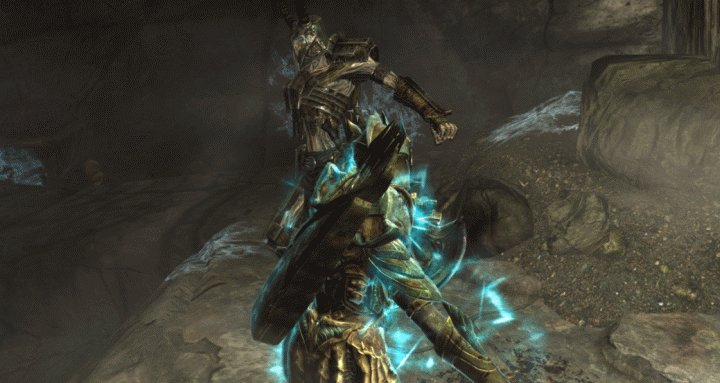

Skyrim is a magical and majestic land filled with very magical but
not-so-majestic creatures. There's are less than 30 groups of Skyrim
creatures, but in each group there are many varieties of each. This is
a table consisting of the most common enemies you will fight. There
are many more but many of the enemies in the game you will meet maybe
every one hundred levels you go up, so I won’t mention them. Also keep
in mind that a certain amount of skill is required when you fight
enemies, so if you can take down a deathlord with a dwarven axe, by
all means, honour the dwemer. There’s no real weaknesses for any
monster in the game, but there are more effective weapons/spells to
fight them with
Chaurus are worm-like insectoid creatures that typically live
underground in caves and even in Dwemer ruins. They are deadly
creatures, possessing the ability to spit out poisonous venom from
their mouths, but they also use bite attacks during combat. Chaurus
are almost always seen with Falmer in the underground cave networks
and Dwemer ruins of Skyrim. The Chaurus appear to be used by the
Falmer as pets and as fighters in combat, as well as torturers of
people when their Falmer masters attack and capture bandits, traveling
caravans and other people.
The Daedra are creatures that roam the Planes of Oblivion, and are
usually summoned by powerful mages, usually of the Conjuration school.
A Dremora is a devilish humanoid being wearing Daedric armor and
wielding burning Daedric weaponry, but can also be extremely adept at
using magic and casting spells. Atronachs are humanoid beings (except
the Storm Atronach) that are formed out of their own element of power:
Flame, Frost, or Storm.
Though Automatons are not entirely creatures, Dwarven Automatons
range in size from smaller than a human to larger than a giant. They
are golden colored, strong robotic creations made by the Dwemer. They
are also extremely resistant to frost damage. They are very strong at
lower levels but get easier.
The Falmer are a race of Mer who have devolved into primitive
creatures inhabiting the dark underground and remote areas of Skyrim.
They were once the Snow Elves until they lost a war with the Nords,
forcing them to live underground with the Dwemer, who blinded and
enslaved them.
Frostbite Spiders are giant spiders found in caves and ruins all
over Skyrim. They shoot balls of poisonous web, and can range in size
from smaller than the Dragonborn to bigger.
Giants
Giant, Frost Giant
Giants are, as their name states, giant humanoid beings who cannot
speak, instead yelling at the Dragonborn to move away if they get too
close or threaten their mammoths.
Spriggan are tree-like humanoid creatures, always female. Matrons
tend to be harder to defeat than the usual Spriggan, with their
heavier armor and more powerful magics. They are guardians of nature,
and specific groups follow either Kynareth or Meridia.
Trolls
Troll, Frost Troll, Udefrykte, Armored Troll
Trolls are large, ape-like creatures with three eyes, and their
usual loot is only Troll Fat inside a bowl. Trolls inhabit most of
Skyrim, but they are uncommon. Two types of trolls can be found,
regular and Frost trolls. Frost trolls, as their name suggests, live
in colder regions with snow.
Wisps
Wisp, Shade, Wispmother
Wisps are glowing, spherical creatures flying around that will
attack the Dragonborn. They are usually near their mother, the
Wispmother, who is a female, glowing humanoid being that is difficult
to defeat. Wispmothers are also resistant to Frost. Shades are
creatures different from the creature type shades, as they are ghostly
apparitions conjured by a Wispmother.

Enemies To Avoid
This is a table that outlines the enemies you should REALLY avoid,
until you have maxed armor and weapons. These are some of the
deadliest enemies in the game, and are absolutely dreadful to fight.
Keep in mind though, you're safe until you reach a certan level so you
can sleep peacefully if you're lower level
Enemy
Description
Ebony Warrior
Once you hit level 80, you will, no doubt, encounter the Ebony
Warrior as long as you have the Dragonborn DLC installed. He will hunt
you down, appearing the next time you enter any of the major cities
and challenge you to a fight to the death. Why you? He’s beaten
everyone else he’s encountered and wants you to send his soul to
Sovngarde in this, his final battle. Obviously, he wears full ebony
armor and is one of the strongest characters in the game at level 80.
If you manage to land a melee attack, his Reflect Blows perk will
reflect 10 percent of the damage back to you. His sword steals your
health and replenishes his. He has 50 percent resistance to fire,
frost, and shock spells; can summon creatures, and knows how to
shout.
Miraak
Miraak is a former dragon priest who claims to be the very first
Dragonborn and the main protagonist of the Dragonborn DLC. He is the
perfect example of absolute power corrupting absolutely, as is past is
full of betrayal and arrogant behavior. Miraak’s level scales with the
Dragonborn’s up to level 150, arguably making him the most powerful
character in the game. He uses a one-handed sword that drains stamina
and a staff that causes poison damage by summoning tentacles. Being
one of the Dragonborn, Miraak also has access to a number of shouts,
including one that allows him to bend the will of several dragons.
Just when you think you’ve got him on the rope, he will use another
one of his shouts to devour the soul of a dragon under his control to
replenish his health mid-battle.
Draugr Death Overlord
If you have seen one Draugr, you have seen them all. At least,
that is what we used to think. Once the Dragonborn reaches level 37,
the Draugr Death Overlord will grace you with his presence (though
some unfortunate souls have encountered them earlier) in one of those
dungeons you used to clear so easily. The Draugr Death Overlord is a
level 45 enemy with 1400 point of health. Oh, and he can shout, too.
Remember when shouts used to be special? They will blow you away with
Unrelenting Force, charge at you, and attack with an Ebony or Ancient
Nord weapon. If that doesn’t work, and you find yourself gaining the
upper hand, they will use Disarm to strip you of your weapon. If you
happen to stumble upon one at a lower level, be sure to bring a Flame
Atronach and your running shoes.
Arch Mages
Not to be confused with the Arch-Mage of the College of
Winterhold, these enemies are comprised of all the most powerful types
of spellcasters across Skyrim, from Cryomancers to Necromancers and
Pyromancers to Electromancers. No matter the type, they are all level
46 and with 575 hp. They cast spells that are adept and higher,
dealing significant damage to the Dragonborn. In particular, their
Destruction spells are augmented with perks that increase their damage
by 50 percent. They also have the Regeneration perk which increases
the effectiveness of healing spells by 50 percent. Pair this with
their ability to increase protection spells to reduce damage, and you
will find that, though they are only wearing robes, they are difficult
to take down—especially since they tend to travel with others.
Nightmaster Vampire
If you have Dawnguard installed, you will eventually run into the
Nightmaster Vampire, the strongest boss type in the game. They are
commonly encountered in vampire lairs or while they are attacking
cities. They pack a whopping 1,226 hp, and at level 65, they are
skilled mages and necromancers, specializing in Destruction and
Necromancy. Watch out for Vampiric Drain which saps 15 points of
health, magicka, stamina per second from the Dragonborn, which totally
sucks. They can also cast adept and higher Destruction spells, but the
real game changer is their ability to use Revenant to reanimate a
powerful corpse to fight for them. Isn’t just fighting the Nightmaster
bad enough? They can turn invisible for crying out loud. You’re on the
verge of winning and then poof! They’re gone, only returning once
their health is recovered.